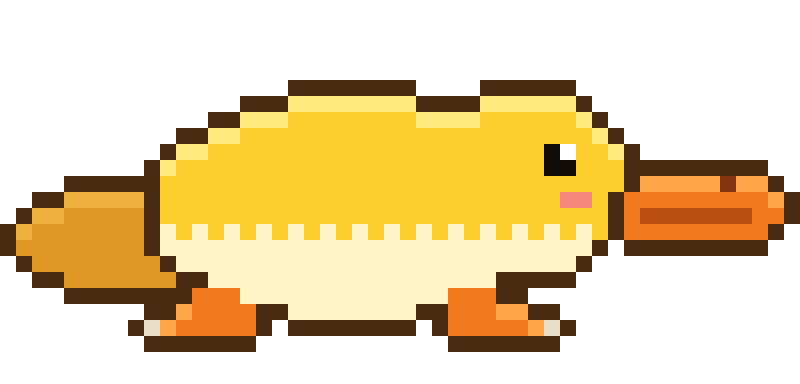

What's inside
Real-time collaboration
Join a room from the Open rooms list or share a room code, and edit one project together. Give your room a name and a password. Blocks, sprites, costumes, sounds and variables sync as you work, with chat and "who's editing what".
Fast like TurboWarp
Projects are compiled to JavaScript, so they run much faster. Custom FPS, interpolation, infinite clones and other advanced settings are included.

Accounts, friends & studios
Make an account with a nickname, post your projects, add friends and build studios together. New projects start with the TurboScratch platypus!
Addons & extensions
Dozens of editor addons (dark mode, block search, debugger and more), TurboWarp's custom extensions, and a Console that shows what your project does while it runs.
Work together
- Open the editor, click Collaborate in the menu bar and type your name.
- Under Open rooms, click Join next to a room. Rooms with a 🔒 need their password.
- Or make your own room: keep the room code, give it a name if you like, and add a password to keep strangers out. Then click Join room. Your project becomes the room's project.
- To invite friends, click Copy invite link and send it to them. If the room has a password, tell them the password yourself: the link doesn't contain it.
The editor connects to the TurboScratch server by itself, so you don't need to type any address.
The server runs on our own computer, so now and then it may be offline: if Collaborate can't connect, try
again later. To collaborate with friends on the same Wi-Fi without the internet, download the project and
double-click start-turboscratch.command (Mac): it runs the editor and a server on your computer.
More in the README.